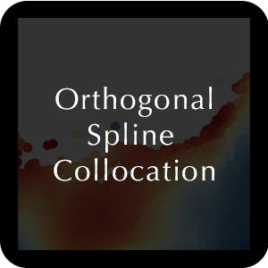
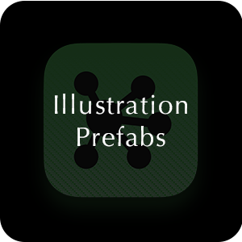
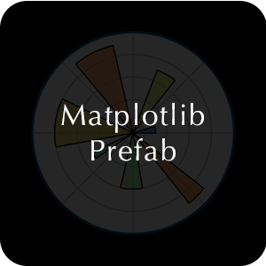
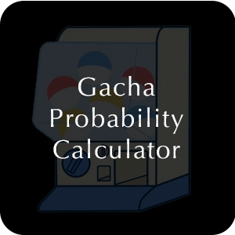
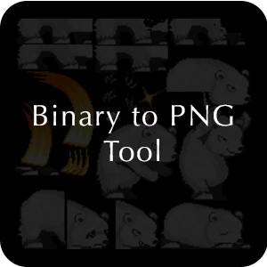

Projects

Orthogonal Spline Collocation
Orthogonal collocation method was famous at 1970s, mainly developed by BA Finlayson. Which is a powerful collocation tool in solving partial differential equations and ordinary differential equations. This reposiotyr provides the implement of 1D Orthogonal Spline Collocation (OSC) Method. Show the performance on linear and nonlinear examples.
[GitHub]
Peak Over Threshold
The Peak Over Threshold-method (POT-method) is one way to model extreme values. This method relies on the Pickands-Balkema-de Haan theorem. The main concept of the method is to use a threshold to seclude values considered extreme to the rest of the data and create a model for the extreme values by modeling the tail of all the values the exceeds this threshold.
[GitHub]
Edge-to-node Graph Neural Networks
The E2N (Edges to Nodes) strategy tackles edge classification by transforming edges into nodes in graphs. This transformation uses two strategies based on edge destinations and source nodes. The transformed graph is then processed using techniques like the graph convolutional network (GCN) and graph attention network (GAT).
[GitHub]
Coach ride to Devil's Castle
Castle of the Devil is a 4-8 player card game. All players are passengers within a carriage that is rushing to Devil's Castle. They each act as a member of a secret association, but no one knows who is friend and who is foe. I am working to develop this game into a video game with the Unity game engine.
[GitHub: TBD]
Illustration Prefabs
I have a passion for creating visually appealing illustrations in publications. During my time writing papers, I often dedicated significant effort to craft various illustrations. In this repository, I've compiled some of my previous illustration source files created by OmniGraffle or Adobe Photoshop. I hope these templates inspire you and provide techniques to craft beautiful illustrations.
[GitHub]
Matplotlib Prefabs
In this repository, I've compiled some of my previous matplotlib plotting source code and have designed several templates for convenient reuse. I've chosen not to package this content due to the myriad of customizable parameters. Instead, I believe a template approach is more straightforward to modify and repurpose. I hope these templates inspire you and provide techniques to craft beautiful matplotlib figures.
[GitHub]
DND Character Sheet
This is a server-side + web-based tool based on Flask and Python, designed to facilitate the viewing of game status for both the Dungeon Master and players. It can provide players with status information and some detailed explanations; automatically calculate certain attribute information for players; assist the Dungeon Master in viewing and maintaining player status.
[GitHub]
Camel Up Calculator
This is a tool to calculate the probability and expectation in the board game Camel Up. This tool can help you do a "perfect" decision when you are playing the game. Camel Up is a game with high randomness, so even though we follow the analysis probability and exceptions to play the game, we may not win. So, I create this small tool to provide the chance to test this guess.
[GitHub]
I feel luck: gacha probability calculator
This is a WeChat applet about calculating the probability of drawing cards. Misunderstandings about the probability of drawing cards are everywhere, we always trust that we can get the UR card with 1% probability for 100 draws. This calculator can help you calculate the real probability of drawing cards.
[GitHub]
Binary to PNG tool
There were many excellent games in Symbian period, most of such games with quite small size. To do this, developers always chose to compile picture materials from PNG format to bin format, and then archive them to Jar package for running. For now, if we want to extract some picture sources from those games, we have to extract PNGs from bin files. Here is a tool to help you do that.
[GitHub]